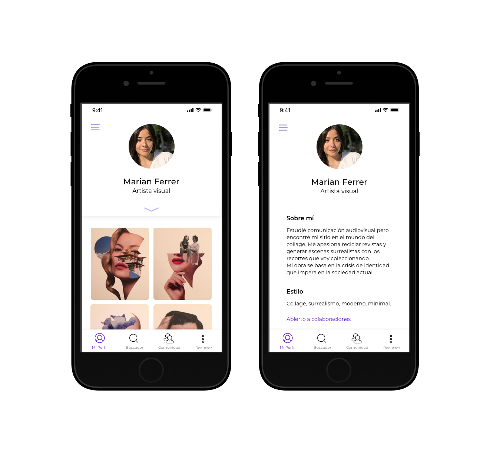

La aplicación Selva del Arte pretende poner en contacto a artistas con espacios donde mostrar su arte. Siendo tan difícil como es dar los primeros pasos en el mundo de la cultura para los artistas noveles, esta app resuelve muchos de los problemas con los que se encuentran. Por un lado, visibiliza su obra en la plataforma digital y por otro, les ofrece un listado con todas las salas donde pueden mostrarla físicamente para llegar a más público.
Al entrar en la app, el usuario debería marcar si es artista o público y la aplicación se adaptará por completo a la clase de perfil. Una vez indique si es artista, se le pide la disciplina en la que trabaja, etiquetas que definan su obra y una seria de datos que se utilizarán para mostrarle convocatorias adaptadas a su ámbito.

Cuando el artista ya ha creado su perfil, tanto salas como público podrán tener acceso a éste donde verán su portfolio, algo de información y si está abierto o no a colaborar con otros artistas. Por su parte el artista tendrá un menú lateral donde podrá ver los últimos eventos en los que ha participado, las convocatorias que tiene pendientes, sus sitios y artistas guardados y una sección de ajustes en la que podrá gestionar, por ejemplo, las notificaciones.

Desde el buscador el artista encontrará un segmented control en el que podrá buscar
- Cualquier tipo de espacio que esté dispuesto a albergar exposiciones culturales
- Todas las convocatorias abiertas a artistas actualmente
- Todos los eventos a los que puede asistir como público.
Todo ello es susceptible de ser filtrado por varios factores. Por ejemplo, en el caso de los espacios podría filtrar por tipo, horario, aforo...
Una vez seleccione uno de los espacios que el listado ofrece, el usuario tiene acceso a la descripción de éste, la posibilidad de guardarlo en favoritos y un listado de servicios (desde si tiene asientos a si ofrece promoción del evento). Podrá ver una galería de fotos de los últimos eventos, reviews de otros usuarios que hayan expuesto en el espacio y las convocatorias que tiene abiertas en la actualidad si las hubiera.

Cuando selecciona una convocatoria el usuario podría guardarla en favoritos o enviarla a un contacto. Tiene acceso a las bases, a ver quienes son los organizadores y qué otros artistas participan. Desde esa misma pantalla el artista podría optar por enviar una solicitud para apuntarse para que la recibieran los organizadores.

Selva del Arte ofrece, además de todo esto, un listado con recursos para la producción de eventos culturales al que pueden tener acceso tanto artistas como espacios. Este listado incluiría desde empresas de alquiler de material a profesionales de sonido, luz o fotografía para contrataciones.
Pero no termina ahí: en la selva que es el mundo del arte es imprescindible crear comunidad y filosofía de ayuda entre artistas: Es por eso que en la sección "Comunidad" el artista podría tener acceso a foros y buscar artistas que le interesen. Desde ahí podría fácilmente entrar en sus perfiles para ver su obra, enviarles un mensaje o incluso ofrecerles colaboración.
En la app dirigida al público el usuario tendría acceso al listado de eventos con todos los filtros y a la búsqueda de artistas y salas que podría marcar como favoritos.